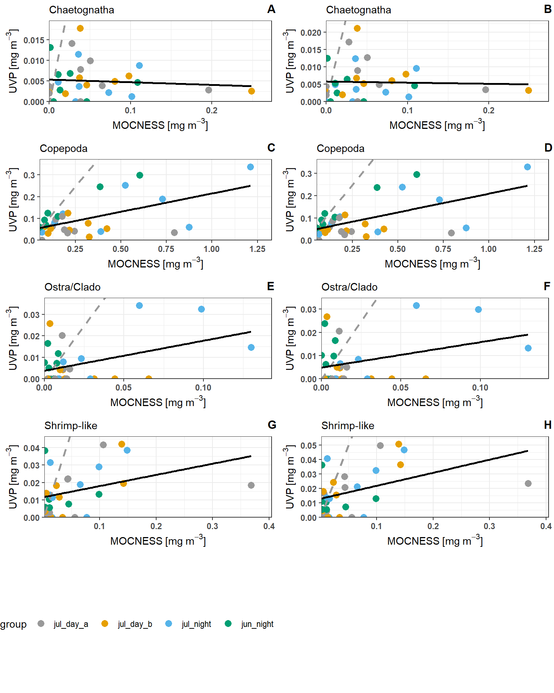

Regression of Biomass Estimates
To compare similarity of UVP and MOCNESS estimates of taxa biomass, linear regressions were constructed to compare estimates between the devices of similarly sized taxa (above 0.934mm) in matching depth bins.
UVP Estimates were calculated following both a pooled-cast approach and an average-cast approach. See methods for calculation here.
Below are plotted results. Grey lines indicate the 1:1 line (if estimates were equal between the devices). Black lines indicate the line of best fit.

Similar to the abundance bin-specific regressions, the biomass in UVP bins was lower from UVP methods. However, there is a strong significant relationship between copepod estimates from the UVP and those from the MOCNESS. This is true for both pooled-cast UVP and average-cast UVP methods. This is surprising knowing that the abundance estimates for the same copepods are much smaller. This indicates that for Copepods, the UVP is measuring large individuals, or more likely, that the conversion factor for image-to-biovolume, is inaccurate. While there is a signficant relationship, we do not recommend using this line for a conversion factor because we do know that the copepods measured by the UVP are not the same by abundance. ***
Regression summaries can be found below: ::: {.cell}
Code
get_reg_sum <- function(reg) {
reg_summary <- summary(reg)
rvect <- reg_summary$coefficients[2,-3]
rvect[4] <- reg_summary$r.squared
names(rvect) <- c('Slope_Estimate','Std.Error','p-value','r.squared')
return(rvect)
}
pool_sum <- lapply(reg_dat$pooled, get_reg_sum) |> list_to_tib('Taxa')
avg_sum <- lapply(reg_dat$avged, get_reg_sum) |> list_to_tib('Taxa')
#| Column: body-outset
DT::datatable(pool_sum, class = 'hover', caption = 'Pooled-cast method UVP vs MOCNESS regression output')Code
#| Column: body-outset
DT::datatable(avg_sum, class = 'hover', caption = 'Average-cast method UVP vs MOCNESS regression output'):::